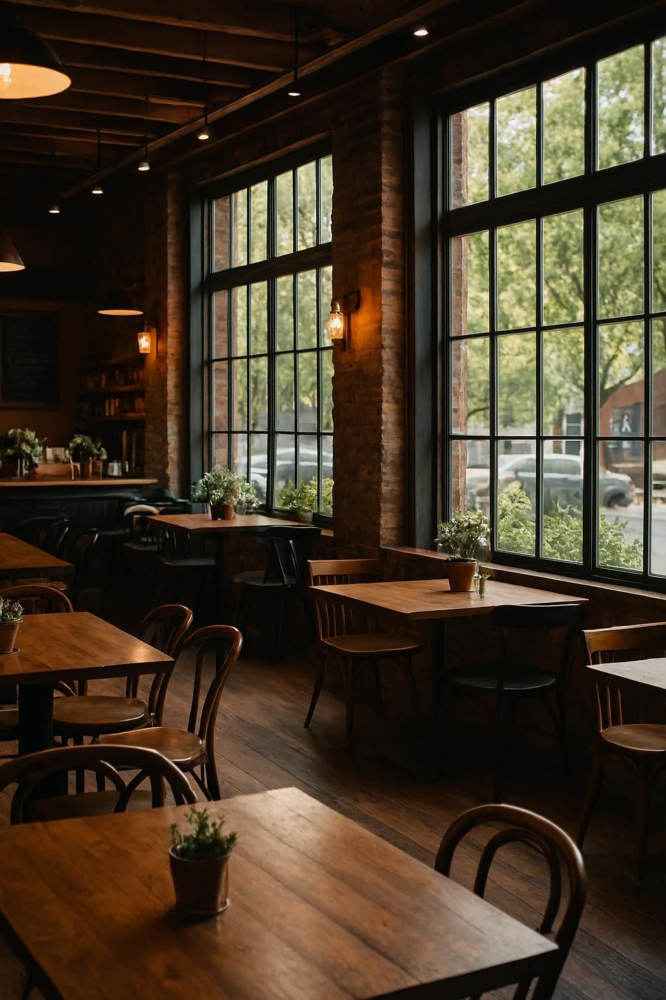

Chapter Tak Selesai
Chapter Tak Selesai adalah coffee space yang lahir dari keyakinan sederhana:
bahwa tidak semua cerita harus selesai. Ada kisah yang cukup dinikmati,
ditemani secangkir kopi hangat dan waktu yang berjalan perlahan.
Sejarah & Identitas
Chapter Tak Selesai bermula dari kebiasaan kecil — duduk, menulis, dan
menikmati kopi tanpa terburu-buru. Nama "Tak Selesai" terinspirasi
dari cerita hidup yang terus berjalan, penuh jeda, refleksi, dan proses.
Kami menghadirkan ruang yang cerah, hangat, dan estetik, terinspirasi dari
biji kopi, aroma panggangan, serta uap cangkir yang menenangkan. Tempat ini
dirancang sebagai ruang aman untuk berpikir, berbincang, dan menjadi diri sendiri.


Kisah Owner
Chapter Tak Selesai didirikan oleh seseorang yang percaya bahwa kopi adalah
medium bercerita. Berawal dari kegemaran menikmati kopi di sela aktivitas,
lahirlah keinginan untuk menciptakan ruang yang tidak menuntut apa pun —
selain kehadiran dan kejujuran.
Setiap detail di Chapter Tak Selesai adalah refleksi perjalanan personal
sang owner: tentang proses, kegagalan, harapan, dan keberanian untuk berhenti
sejenak.
"Tidak semua hal harus selesai hari ini."
Untuk Kamu
Chapter Tak Selesai hadir untuk kamu yang sedang mengejar mimpi,
menyusun ulang hidup, atau sekadar ingin diam sejenak.
Kami percaya setiap orang punya cerita — dan kamu selalu punya tempat
di sini untuk menikmatinya, tanpa harus selesai.